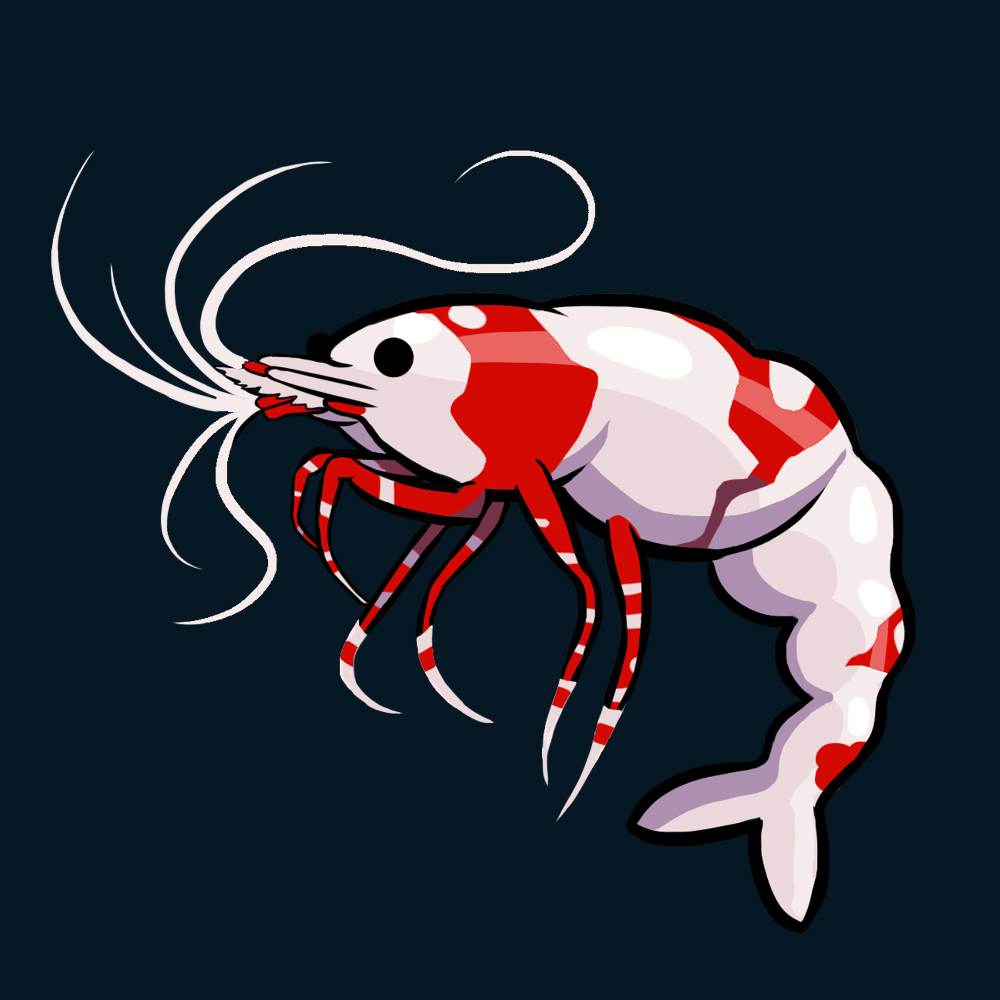

Filtration
Sponge filters are particularly useful in shrimp tanks because they provide gentle flow and cannot easily suck up tiny shrimplets.

Shrimp care
Neocaridina shrimp are often described as easy to keep, and they can be — once the aquarium is mature and stable. Most problems come from sudden changes, poor acclimation, unstable water or trying to correct parameters too aggressively.
The basics
Neocaridina can live in a reasonably wide range of water conditions, but they do poorly when those conditions swing suddenly. A stable aquarium that is slightly outside an “ideal” number is often safer than constantly adjusting pH, GH or KH.
Aquarium setup
Shrimp spend much of the day picking at surfaces rather than swimming in open water. A planted tank with wood, rocks, mosses and leaf litter gives biofilm somewhere to develop and gives shrimplets places to hide.
Sponge filters are particularly useful in shrimp tanks because they provide gentle flow and cannot easily suck up tiny shrimplets.
Mosses, fine-leaved plants and floating roots create shelter and collect biofilm. Java Moss is especially useful in breeding tanks.
Driftwood and porous rock increase grazing area and give the aquarium more structure without needing to fill every centimetre with plants.
A newly cycled aquarium may technically process ammonia but still have very little established biofilm. Shrimp generally settle better into a tank that has had time to mature.
Feeding
Neocaridina constantly graze on algae, biofilm and tiny organic material in the aquarium. Prepared shrimp food should supplement that natural grazing rather than replace it.
Moulting
Shrimp must moult as they grow. The empty exoskeleton can look alarmingly like a dead shrimp at first glance, but it is often transparent and split along the back.
Leave normal moults in the aquarium. Shrimp often eat them and reclaim some of the minerals.
Repeated failed moults can point to stress, unsuitable mineral balance, sudden parameter changes or poor overall condition. Avoid trying to fix a suspected mineral issue by making large, sudden changes.
Water changes
Neocaridina do not require dirty water, and “shrimp hate water changes” is a poor rule to follow. What they dislike is a sudden change in temperature or chemistry.
Regular partial water changes are useful for controlling nitrate and dissolved waste. Try to keep replacement water reasonably close to the tank in temperature and general chemistry.
Acclimation
New shrimp may arrive in water with a different temperature, hardness or pH. Sudden transfer can stress them badly even when both sets of numbers look acceptable on their own.
Gradual acclimation gives the shrimp time to adjust. Drip acclimation is commonly used for this reason, particularly when there is a noticeable difference between transport water and the aquarium.
Once acclimated, avoid adding the transport water to the aquarium if you do not need to.
Tank mates
Adult Neocaridina can coexist with some small peaceful fish, but almost any fish capable of fitting a shrimplet into its mouth may eat one. If your goal is to grow a large breeding colony, a shrimp-only aquarium is the safest option.
Snails are generally easier companions because they do not hunt shrimp and often occupy a similar cleanup role.
Breeding
Mature females carry fertilised eggs beneath the abdomen. These “berried” females fan and clean the eggs until they hatch. Neocaridina do not have a free-swimming larval stage — the young emerge as tiny versions of the adults.
Dense moss, mature biofilm, gentle filtration and a lack of predators give shrimplets the best chance of surviving.
Colour lines
Bloody Mary, Blue Dream, Yellow Goldenback and other Neocaridina colours are selectively bred lines of the same species. They can interbreed.
If maintaining a predictable colour line matters, keep different colour varieties in separate aquariums. Mixed colonies can produce offspring with increasingly variable or wild-type coloration over generations.
Common mistakes
Keep reading